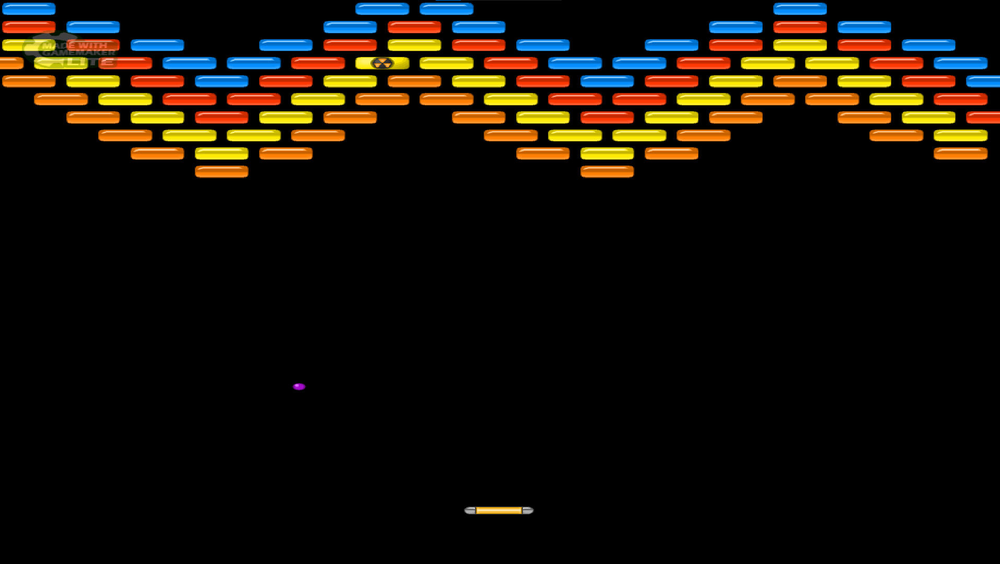
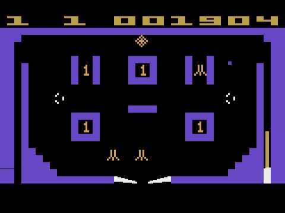

News and Releases:
Dragon Duel released!
May 30th, 2020 - NDA
Language/Engine: C++/SDL 2.0 


Dragon Duel is a passion project, inspired by the good old releases of Atari 2600.
The gameplay featured is simplistic and reminiscent of the Atari 2600 games and
your goal is to destroy the opposing dragon by hitting it 3 times with the arrow!
This is a 2 player title.
If you would like to give it a shot yourself, click on the download button bellow.
Dragon Duel, Platforms:
DOWNLOAD
The Brawler released!
January 11th, 2014, GameGuardian Soft
Language/Engine: Game Maker Language/Game Maker: Studio

After 10 days of experience with Game Maker, my goals were dead set on making something with actual gameplay. As a kid I remembered enjoying Ricochet: Lost Worlds, an obscure Atari Breakout-like game with spaceships and guns. The gameplay of paddle hitting a ball then hitting a block then coming back was almost enchanting to me, I could play it for hours. With the experience of physics materials already under my belt, I proceeded to make my most ambitious project yet, The Brawler.
The Brawler boasts with 10 unique levels, with a specified goal and clear progression. Every stage felt different and the goal was achieved by positioning the paddle in different ways. The goal of the game was to hit the nuke block in order to destroy it and save the universe. The goal was chosen both from a "lore" perspective but also a technical one; I did not know how to make a script that counted how many blocks have been destroyed. Thus I decided to take that weakness and turn it into a feature as well as a goal - the ball would hit one of the nuke blocks and the game would transport you to the next level.
The game suffered some shortcomings though, due to the lack of playtesting, however it still remains fully playable. The paddle is sometimes too slow, forcing the player to predict the ball trajectory on the fly and move constantly. The game lasts up to 20 minutes. This would be the last game I would ever publish under this alias.
You can visit the full game page Here
If you would like to give it a shot yourself, click on the download button down bellow.
The Brawler, Platforms:
DOWNLOAD
Nintendo Retro Classic Pinball released!
January 5th, 2014, GameGuardian Soft
Language/Engine: Game Maker Language/Game Maker: Lite
After releasing Medieval Conquest and Unity Motors Paradise Racing, I felt like I could do something more ambitious. At this point in my life, I've decided that 2014 is going to be my year and game developing is going to be a thing I focus on aside from school. Game Maker was my tool of choice, since I've gotten accustomed to it. I've discovered that one could emulate physics objects in Game Maker rather easily, meaning you could emulate bounciness easily. On January 4th, I've taken a day off of making games and got into some obscure Atari 2600 games, namely Atari 2600 Arcade Pinball. I always loved pinball games, and since I've discovered how to make pinball-like physics with Game Maker, my next steps were clear.
As I've gotten more into old games and old tech in general through YouTube and other websites, I've learned that Nintendo's name holds a lot of weight. My next game was to use this to it's advantage to gain more views, which worked quite well. It ended up amassing a whopping 1.5k views.
The game was inspired by Atari 2600 Arcade Pinball, which is obvious when putting the two side by side;

However, the technical expertise did not follow with the game's idea and "marketing". The game was not balanced at all, thus the ball would bounce by itself. The point system that outputted the number of points to the title bar was also broken, because I didn't know how to add the points together thus the title bar would output the number of points the object that was hit was supposed to increment with.
If you would like to give it a shot yourself, click on the download button down bellow.
Nintendo Retro Classic Pinball, Platforms:
DOWNLOAD
Medieval Conquest released!
January 3rd, 2014, GameGuardian Soft
Language/Engine: Game Maker Language/Game Maker: Studio
A single day after releasing my first game, Unity Motors V2, I set my sights on another project: a 2D platformer. With a newly found confidence after my first release, I marched forth and started on a new engine, the more prominent and noob friendly Game Maker Studio. I downloaded the free version on my Acer Aspire laptop, right after releasing Unity Motors and started making a medieval-like platformer.
The sprites were taken somewhere off of opengameart.com, a website with a humble selection of sprites and sounds people were free to use for their projects. The game didn't include hard written code, it's core functions like movement were constructed purely using the built in graph coding Game Maker was known for.
I've added a sword swinging animation in hopes of implementing combat but every time the player would press F to swing the sword, all the enemies would disappear. That's how I've coded it of course, but melee combat was an insanely confusing concept for me to grasp at the time so enemies were cut, because I wanted to release the game before the day was out. The game duration is around a minute.
The goal of the game was to make it through an obstacle course I have constructed. The game has two levels, however I could not figure out what was wrong with the aspect ratio on level two, thus it remained unplayable forever:
The game has also achieved a nice number of views, reaching almost 1000 with 9 likes, 8 years after release.
If you would like to give it a shot yourself, click on the download button down bellow.
Medieval Conquest, Platforms:
DOWNLOAD
First game - Unity Motors - Paradise Race v2 released!
January 2nd, 2014, GameGuardian Soft
Language/Engine: C#/Unity 4.2.0 

The first official game release of mine. First time using Unity 3D, which had only just begun to
gain popularity among the crowd. The first daring step towards the wonderful world of indie game dev. The tutorials and materials were very scarce at the time, so official
Unity packages were the thing to go with. This game contains the default Unity car controller package
which was a prominent download on this old Unity package pirating website called CGPersia.
Originally released on GameJolt, it has managed to gain some sort of popularity, peaking at 3.3k views 8
years after it's original release date. The landscape of GameJolt in 2014 made it very easy to gain views
and create a community, opposing to today. This game was released under my first alias, GameGuardian Rush, an account I made at age 12.
<---
The gameplay is simple - Take your car and gain mad air while listening to the jammin tunes of Unity
car controller music.
If you would like to give it a shot yourself, click on the download button bellow.
Unity Motors - Paradise Race v2, Platforms:
DOWNLOAD